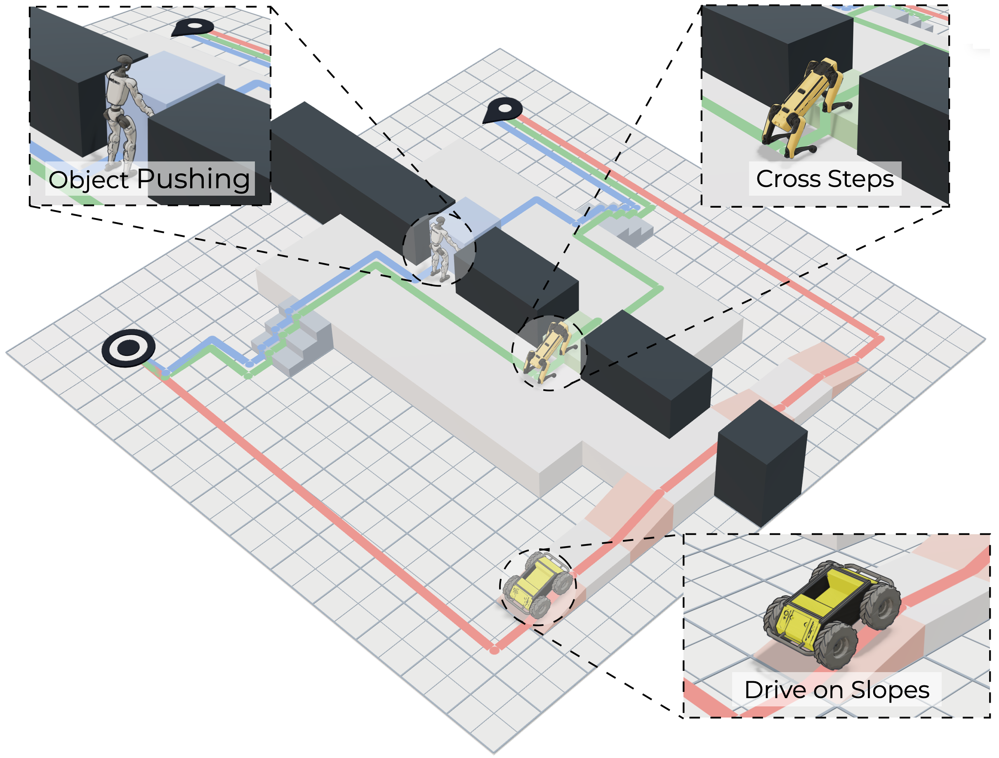
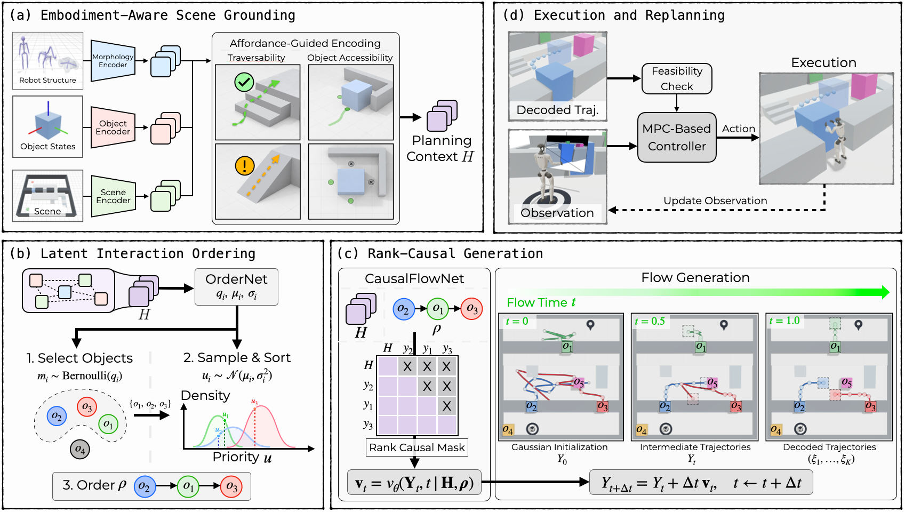

Robot structure
Transparent meshes expose each robot’s kinematic structure.
Anonymous Authors · ICRA 2027 · Under review
CLEAR jointly selects objects, determines their interaction order, and generates motion references conditioned on robot morphology and scene geometry.

Robot morphology determines terrain traversability and feasible object interactions. Planning must account for these constraints and for how each interaction affects subsequent actions.
Transparent meshes expose each robot’s kinematic structure.
Object poses describe the configuration before interaction.
Recorded trajectories span stairs, slopes, and a stepped bridge visualization.
Robot morphology, object poses, and scene geometry jointly specify the planning context.
Hover or select a tile to enlarge it. Select Play in 3D to inspect the scene.
Accessibility describes whether the robot can reach a feasible contact configuration around an object.
Capability describes the robot motions and contact actions available for executing an interaction.
Mesh highlights illustrate arm chains and support mechanisms. They do not represent learned scores.

Planning physical interactions in cluttered environments requires reasoning about robot capabilities. For example, a legged robot may climb stairs, while a wheeled robot may need an alternative route. However, the ability to move objects does not ensure task completion, as the interaction order and resulting object configurations can block subsequent actions. To address this challenge, we propose a capability-aware planner that jointly determines which objects to interact with, in which order, and how to move them. Our planner, Capability-Aware Latent Ordering for Adaptive Interaction with Movable Objects (CLEAR), learns to select objects and propose alternative interaction orders from scene observations and robot structure. For each proposed sequence, it generates object references, conditioning each prediction on those planned for preceding interactions. The planner checks whether candidate plans are feasible in the proposed interaction order, selects the valid candidate with the fewest object interactions, and replans from updated observations during execution. Our approach is evaluated in three simulation environments: 2D grids, ordered manipulation, and maze navigation. The maze experiments assess the effect of robot-structure conditioning and the ability to replan when environmental perturbations block access to required objects.